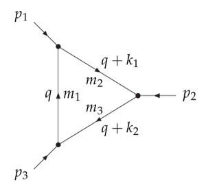
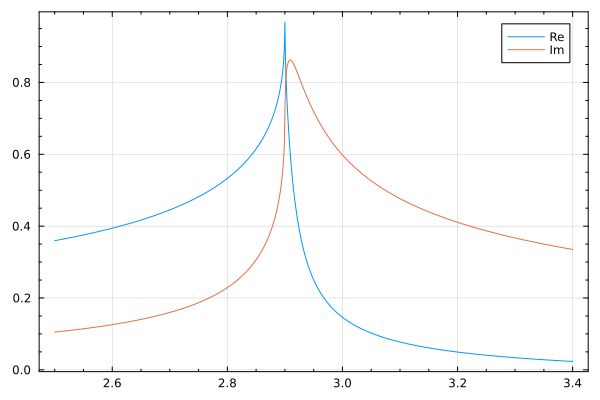

Examples

Let us compute the 3-point loop integral:
\[C\left(p_1^2, p_2^2, (p_1+p_2)^2, m_1^2, m_2^2, m_3^2 \right)\]
with some hadron masses as input.
Tensor-coefficients:
using LoopTools
using PrettyPrinting, BenchmarkTools
(@btime Cget(1.87^2, 2.9^2, 5.28^2, 4.36^2, 2.01^2, 0.89^2) ) |> pprint 57.364 ns (0 allocations: 0 bytes)
(cc0 = -1.676065106709337 - 0.8032383928240837im,
cc1 = 0.4007547354186678 + 0.06709888819168383im,
cc2 = 1.1594541284179152 + 0.63642552106893im,
cc00 = -0.19307680361239576 + 0.009300255685469772im,
cc11 = -0.11351116611462037 - 0.006601093485707071im,
cc12 = -0.26278678952141316 - 0.052753879978476866im,
cc22 = -0.8269246763655919 - 0.5047581457198267im,
cc001 = 0.08466885775250026 - 0.00043166194847799044im,
cc002 = -0.02344246530388124 - 0.007511019461419484im,
cc111 = 0.039443005589594154 + 0.0006912870526907297im,
cc112 = 0.06723289692006137 + 0.005172601848264992im,
cc122 = 0.18207873204368227 + 0.041498266362315496im,
cc222 = 0.5983080522608848 + 0.4007458270673885im,
cc0000 = -0.5423277918543472 - 7.627040500099436e-5im,
cc0011 = -0.04797735271537293 + 2.9128904844004638e-5im,
cc0012 = -0.003134102699814385 + 0.00034487079553350484im,
cc0022 = 0.04248884897570692 + 0.006070285266030245im,
cc1111 = -0.01719212347824144 - 7.484663783194328e-5im,
cc1112 = -0.019663294851511977 - 0.0005406806372725127im,
cc1122 = -0.04452802455210807 - 0.004054700047145228im,
cc1222 = -0.12875442947459653 - 0.032662599188956955im,
cc2222 = -0.4373679515628131 - 0.3185092200142066im)Here we used Cget (upper case for the first letter) which returns only the finite piece. If val_only=true (default to false), then numerical values are given as an NTuple. If we want also the coefficients of $1/\varepsilon$ and $\varepsilon^{-2}$, we need cget (lower case) or cgetsym, see below.
Scalar integral:
# or simply using `C0`
C0i(cc0, 1.87^2, 2.9^2, 5.28^2, 4.36^2, 2.01^2, 0.89^2)-1.676065106709337 - 0.8032383928240837imPreallocate a vector to receive results from bput!:
const res = Vector{ComplexF64}(undef, 33)
@btime bput!(res, 1, 0.1, 0.1)
pprint(res) 26.563 ns (0 allocations: 0 bytes)
[2.7042536122381353 + 2.433467205584167im,
1.0 + 0.0im,
0.0 + 0.0im,
-1.3521268061190677 - 1.2167336027920834im,
-0.5 + 0.0im,
0.0 + 0.0im,
-0.10239181795089487 - 0.12167336027920835im,
-0.033333333333333326 + 0.0im,
0.0 + 0.0im,
0.9435844756601309 + 0.7300401616752501im,
0.3333333333333333 + 0.0im,
0.0 + 0.0im,
0.05119590897544743 + 0.06083668013960418im,
0.016666666666666666 + 0.0im,
0.0 + 0.0im,
-0.7393133104306626 - 0.48669344111683344im,
-0.25 + 0.0im,
0.0 + 0.0im,
-1.5327771602519702 + 0.8111557351947223im,
0.0 + 0.0im,
0.0 + 0.0im,
0.7663885801259851 - 0.40557786759736114im,
0.0 + 0.0im,
0.0 + 0.0im,
-0.2042711652294683 - 0.2433467205584167im,
-0.08333333333333333 + 0.0im,
0.0 + 0.0im,
-0.44644419743412134 + 0.32446229407788896im,
0.0 + 0.0im,
0.0 + 0.0im,
0.10213558261473414 + 0.12167336027920836im,
0.041666666666666664 + 0.0im,
0.0 + 0.0im]The same result can be obtained using bget(1, 0.1, 0.1), which takes only the p^2, m1^2, m2^2 as the arguments, and the preallocated array has already been defined inside the package as LoopTools._Bres_ (LoopTools._Cres_ for the three-point loop and so on).
Writing out the $\varepsilon^{-1}$ (corresponding to DR1eps in the Mathematica version) terms explicitly:
bgetsym(1, 0.1, 0.1) |> pprint(bb0 = (2.704254 + 2.433467im) + 1.0 / ε,
bb1 = -1.352127 + -0.5 / ε,
bb00 = -0.102392 + -0.033333 / ε,
bb11 = (0.943584 + 0.73004im) + 0.333333 / ε,
bb001 = (0.051196 + 0.060837im) + 0.016667 / ε,
bb111 = -0.739313 + -0.25 / ε,
dbb0 = (-1.532777 + 0.811156im),
dbb1 = 0.766389,
dbb00 = -0.204271 + -0.083333 / ε,
dbb11 = (-0.446444 + 0.324462im),
dbb001 = (0.102136 + 0.121673im) + 0.041667 / ε)Bget(1, 0.1, 0.1, val_only = true)(2.7042536122381353 + 2.433467205584167im, -1.3521268061190677 - 1.2167336027920834im, -0.10239181795089487 - 0.12167336027920835im, 0.9435844756601309 + 0.7300401616752501im, 0.05119590897544743 + 0.06083668013960418im, -0.7393133104306626 - 0.48669344111683344im, -1.5327771602519702 + 0.8111557351947223im, 0.7663885801259851 - 0.40557786759736114im, -0.2042711652294683 - 0.2433467205584167im, -0.44644419743412134 + 0.32446229407788896im, 0.10213558261473414 + 0.12167336027920836im)Real and imaginary parts of a three-point scalar integral showing the effect of the Landau singularity:
using Plots; default(frame=:box, minorticks=4)
c0(x) = -C0(1.87^2, x^2, 5.28^2, (4.36-0.05im)^2, 2.01^2, 0.89^2 )
plot(2.5:0.001:3.4, x-> real(c0(x)), label="Re" )
plot!(2.5:0.001:3.4, x-> imag(c0(x)), label="Im" )